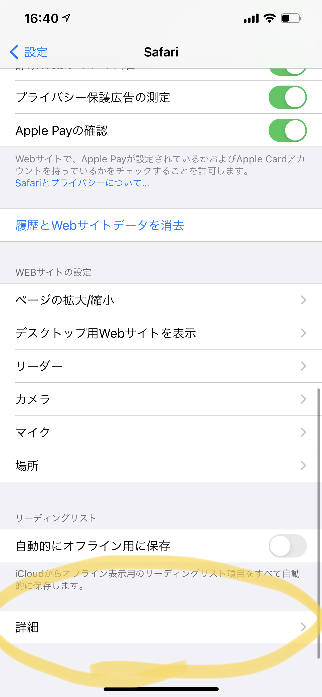

1.「設定」の「Safari」を開きます。 Go to "Settings" and open "Safari".
2.下にある「詳細」を開きます。Open "Details" at the bottom

3.「Experimental Features」を開きます。Open "Experimental Features".
4.下の方にある「WebGL2.0」と「WebGPU」のチェックをオンにします。Check the "WebGL2.0" and "WebGPU" checkboxes at the bottom.
これでSafariの設定は完了です！ゲームをお楽しみください